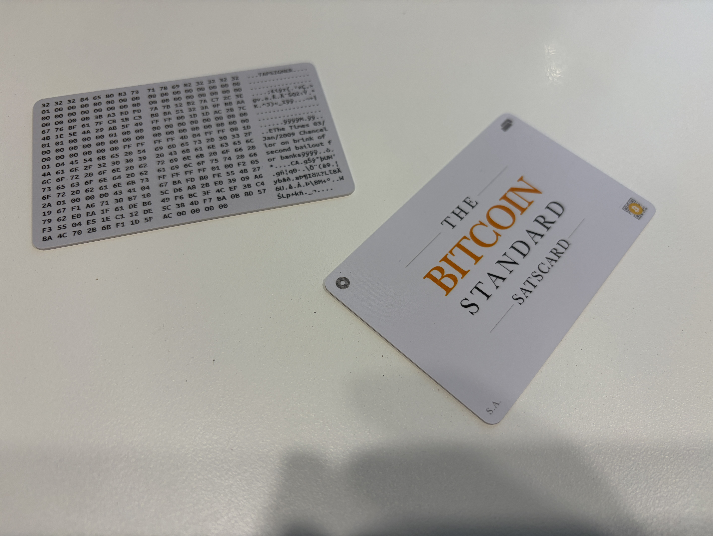

지난 글에서 콜드카드 Q를 떠나보내는 얘기를 했다. 근데 후유증이 그걸로 끝이 아니더라.
서랍을 열어보니 같은 코인카이트(Coinkite)에서 나온 탭사이너랑 새츠카드가 나란히 누워있었다. 둘 다 개인키가 카드 밖으로 안 나가는, 이론상 완벽한 콜드월렛이다. 근데 이상하게 손이 안 가더라.
콜드카드 Q, 여러 번 재부팅해도 인터넷 근처도 안 간 콜드월렛인데, 요즘은 그냥 핫월렛보다도 믿음이 안 간다. 이게 무슨 매직인지.
같은 회사에서 만들었다는 이유 하나만으로, 잘 지내던 카드 두 장까지 덩달아 의심받는 신세가 된 거다. 억울할 만하다.
1. 그래서 진짜 안전한 거야, 아니야?
정신 차리고 찾아보니, 코인카이트도 이 부분은 명확히 밝혀뒀다. 탭사이너와 새츠카드는 콜드카드와 완전히 다른 코드베이스로 동작해서, 이번 엔트로피 사태와는 무관하다고.
머리로는 이해했다. 근데 마음이 안 따라주는 거, 이게 바로 신뢰가 한 번 깨졌을 때 생기는 부작용이다. 논리랑 상관없이 "코인카이트"라는 글자만 봐도 일단 한 번 의심하고 보는 병에 걸려버린 거지. 나만 이런 거 아니지…?
2. 그래도 복습은 하고 가자 — 탭사이너
탭사이너는 카드 안에 개인키를 직접 품고 있는 NFC 서명 카드다. 처음 휴대폰에 태그하는 그 순간 카드 내부에서 개인키가 생성되고, 이 키는 죽을 때까지 카드 밖으로 안 나온다. QR 화면도 없이, 그냥 휴대폰 뒤에 톡 갖다 대는 것만으로 서명이 끝난다.

서명할 때마다 CVC를 입력해야 하고, 카드를 잃어버리면 초기화할 때 받아둔 백업 파일 + CVC가 유일한 복구 수단이다. 이 둘을 같이 보관하면 안 되는 이유도 여기 있다.
3. 그리고 새츠카드
새츠카드는 성격이 완전히 다르다. "내 지갑의 서명키"가 아니라, 카드를 쥔 사람이 곧 그 돈의 주인이 되는, 실물 지폐에 가까운 카드다. 카드 하나에 10개의 슬롯이 있고, 슬롯마다 독립된 주소와 개인키가 따로 있다.
잔액 확인은 CVC 없이도 태그만 하면 되고, 실제로 그 돈을 쓰려면 "언실(Unseal)"이라는 절차로 개인키를 노출시켜서 다른 지갑으로 스윕해야 한다. 언실된 슬롯은 그 순간부터 폐기 취급 — 재입금하면 안 된다. 소액 선물용, 테스트용으로는 이만한 게 없다.
4. 그래서 결론은
기술적으로는 아무 문제 없다는 걸 안다. 그래도 당분간은 새츠카드 슬롯 하나 열 때마다 손이 살짝 떨릴 것 같다. 신뢰라는 게 참 회복이 더디다.